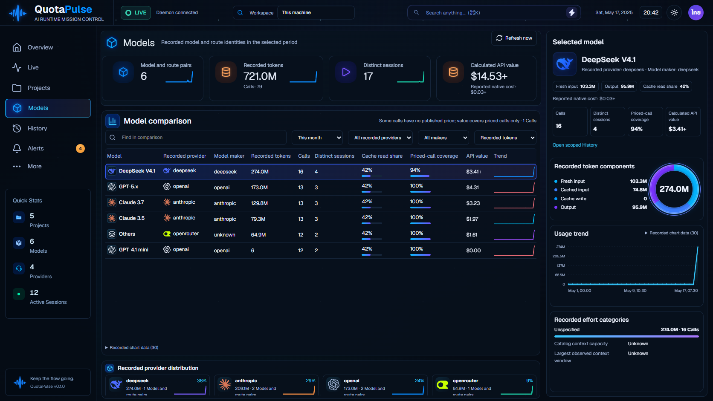

ผลตรวจและข้อจำกัด · ช่องว่างจาก concept ที่ยังต้องทำต่อ
แอปจริงผ่าน API โดยใช้ฐานข้อมูลสังเคราะห์แยกสำหรับทดสอบ ยังไม่ใช่การรับรองความเหมือน99–100% รุ่นนี้เพิ่ม tooltip/คีย์บอร์ดให้กราฟ Projects และ Models พร้อมแก้ click-focus ของ History; ZIP121 ยังเป็นแอป120

ตัวอย่างจอแคบ: Projects ไทยสว่าง390px · Models ไทยสว่าง390px (Calls)